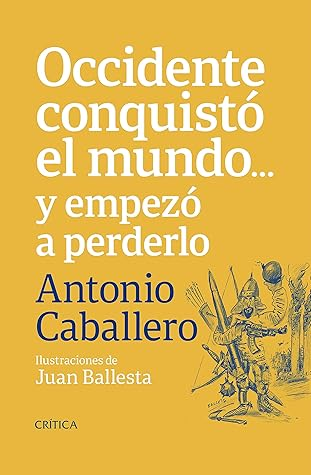

Occidente conquistó el mundo ... y empezó a perderlo (Spanish Edition)
Reseña por Jorge I. Zuluaga

Ver reseña en GoodReads (necesita cuenta)
Esto es justamente lo que me pasó con "Occidente conquistó al mundo y empezó a perderlo".
Para empezar: la extensión. El libro es demasiado corto y "superficial".
En la edición de Crítica de 2019 (o 2020), el libro tiene apenas 126 páginas, algunas simplemente en blanco o con una viñeta que ocupa solo la mitad de la página. Esto implica que la extensión total del libro debe ser de unas 100 páginas efectivas de texto, lo que para un lector curioso es demasiado poco, especialmente teniendo en cuenta que la idea del libro ameritaría un poco más.
Como lo pueden leer en la descripción, el libro presenta una síntesis superficial de lo que pasó en el mundo entre el año 1000 y el año 2020. La síntesis se divide por siglos y personajes clave en cada siglo. Los eventos y personajes se concentran normalmente alrededor de la política y lo social, dejando casi completamente a un lado la ciencia y las artes (que en algunos siglos fueron cruciales para el dominio de Occidente).
El segundo defecto importante son las que considero evidentes "imprecisiones" históricas. No soy precisamente un experto, pero algunas de mis lecturas me han hecho más escéptico de lo que creía. Ya no puedo pasar por alto el uso incorrecto de términos, la descripción de eventos que no ocurrieron en realidad (según lo han descubierto las investigaciones históricas) o interpretaciones de la historia que son sencillamente incorrectas o están contaminadas por algún sesgo ideológico.
Pero todo esto es inevitable: estamos hablando de un texto de divulgación de la historiografía y no de un documento académico. O tal vez, simplemente, me estoy volviendo más aburrido y psicorrídigo.
Para citar solo tres ejemplos (no los registré todos): 1) Habla de la Alta Edad Media como si se tratara de los últimos siglos del medioevo europeo; en realidad la convención es contraria: la Alta Edad Media es la que siguió a la caída del Imperio romano, mientras la Baja Edad Media es la que está más cerca del Renacimiento (el verdadero, el del siglo XII); 2) Señala que Copérnico se salvó de "milagro" de la persecución del Santo Oficio de la Inquisición al publicar sus ideas sobre el heliocentrismo; en realidad lo hizo porque la publicación de su obra cumbre, "De revolutionibus", ocurrió justo después de su muerte; 3) (Esto lo aprendí en un libro reciente) Creo que al describir el Imperio español de los siglos XV-XVII exhibe el reconocido sesgo de la "leyenda negra", una actitud muy propia de casi todos los académicos; es tan frecuente condenar de forma simplista el Imperio español, que difícilmente alguien vería esto como un "error", pero ahora pienso, en especial después de conocer obras que plantean una visión alternativa de los mismos eventos, que el análisis de lo sucedido en Europa y América durante el Imperio español debe, hoy, hacerse de forma más equilibrada.
No puedo, obviamente, dejar de rescatar lo positivo del librito.
Como todo lo escrito por Caballero, el texto es impecable, muy ameno y fácil de leer. La elección de la mayoría de los personajes es acertada y conduce a pasajes emocionantes que hacen que no quieras soltar la lectura. También hay que decirlo: tratar de resumir mil años en 100 páginas no es tarea fácil y tal vez mis críticas de antes puedan matizarse ante la dimensión del reto.
Las ilustraciones son maravillosas. En esto se lució Juan Ballesta, el caricaturista, como lo había hecho también en el libro de "Historia de Colombia y sus oligarquías". Es sencillamente muy agradable combinar las que a veces pueden ser descripciones pesadas de hechos y personajes con imágenes sencillas, que si bien no buscan la representación exacta de la historia, te ayudan a recordar algunos hechos de referencia. Es difícil encontrar libros de historia bien ilustrados. Este es uno de ellos.
Los capítulos dedicados al siglo XX y al siglo XXI son perfectos, al menos para la extensión y alcance del libro. Esto era de esperarse: esos son los siglos en los que Caballero ha realizado su trabajo como periodista y escritor y, por lo tanto, son los que mejor conoce (y mejor conocemos todos). Sus análisis sobre el surgimiento y decadencia del imperio estadounidense son agudos, como todo lo que escribe. Es ahí donde se siente realmente uno leyendo a Caballero.
En fin. Lean el librito y saquen ustedes mismos sus propias conclusiones.